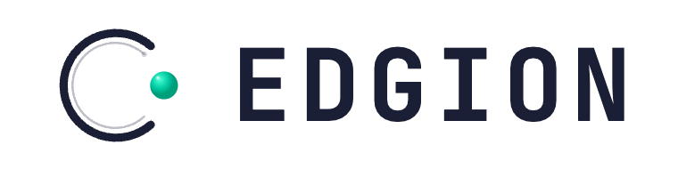
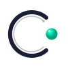
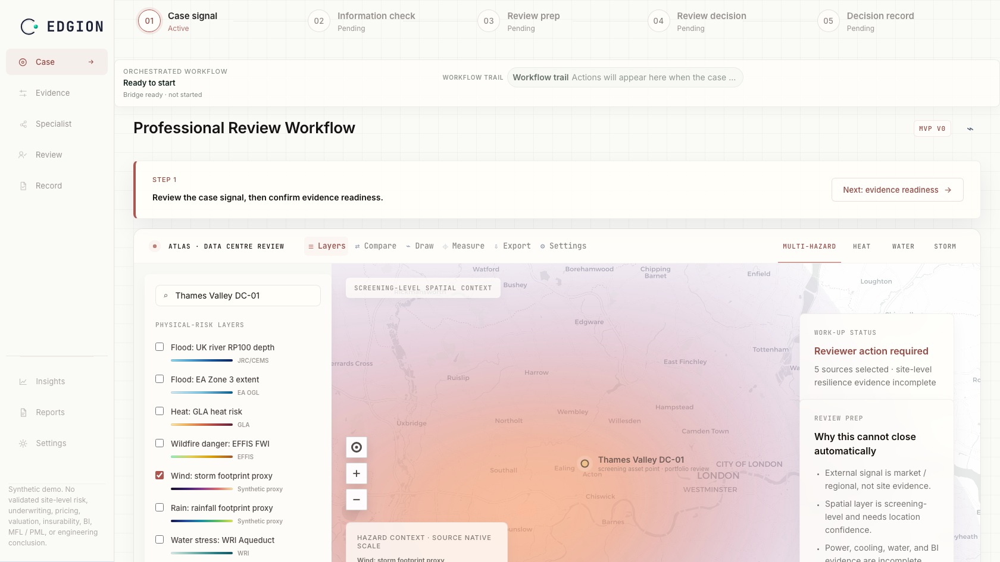
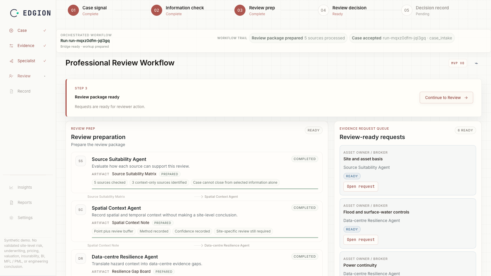
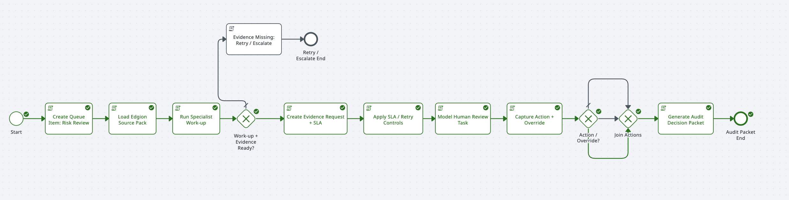
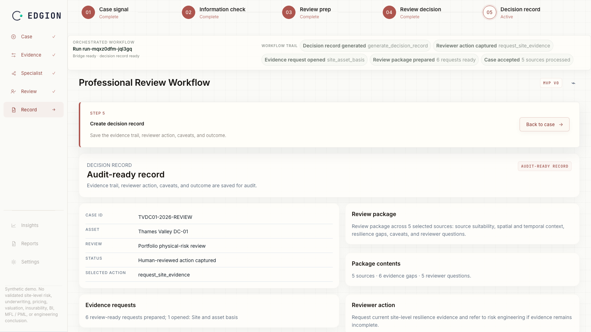

Specialist agents prepare the review package. UiPath routes the case and records the decision.
Sample review case for award demo. Not a client asset.
Five source records checked. Two hazard datasets selected. One coarse-resolution flood source excluded from file closure.
Flood signal intersects the affected asset area. Confidence marked high for portfolio review.
Drainage drawings, backup generator location, and cooling continuity note requested before file closure.
Thames Valley DC-01 has an active flood review, incomplete resilience evidence, and a next workflow step.




Case opened, review package prepared, human action captured, and decision record generated.
Portfolio review queue → UiPath Queue/API → Action Center or Action App → source connectors → auditable record store.
Helps teams prepare reviews faster, with a record they can defend.